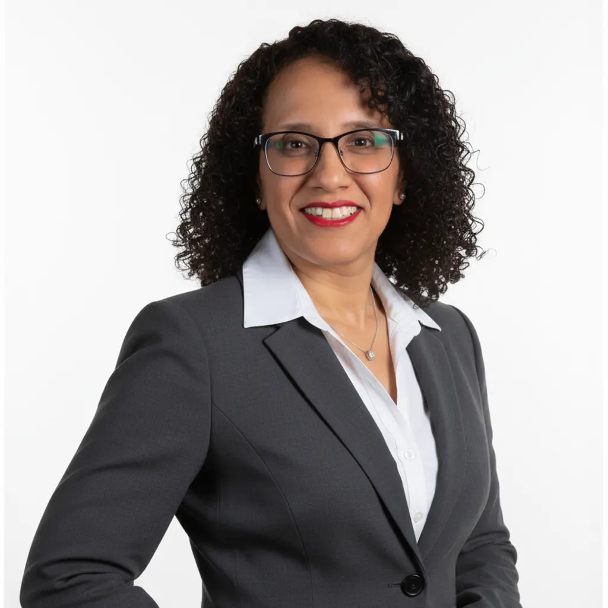
Dr Hanan Farhat
Technical Manager | Asset Life Optimization Wood PLC

14 DE JULHO DE 2026 | Hotel de Convenções de Talatona, HCTA, LUANDA, ANGOLA
Conferencia de Integridade de Ativos, Manutencao, Corrosao e Turnaround Angola 2026


AIMCT ANGOLA 2026
Invitation Only Forum On Resiliencia De Engenharia Para Ativos Deepwater Envelhecidos, Uniting Angola's Offshore Leaders On Integrity, Corrosion, And Turnaround Decisions And Reliability.
Por que esta conferencia?
Negocios acontecem aqui. Os nossos patrocinadores e parceiros nao fazem apenas networking; eles fecham oportunidades. Entre 30 e 90 dias apos o evento, e comum ver projetos-piloto, provas de conceito e mandatos avancarem.
Isto nao e sorte; faz parte do nosso DNA. Cada conferencia da Cogent e desenhada para acelerar negocios, impulsionada por decisores qualificados por BANT e criada para converter conversas de alto valor em resultados reais de receita.
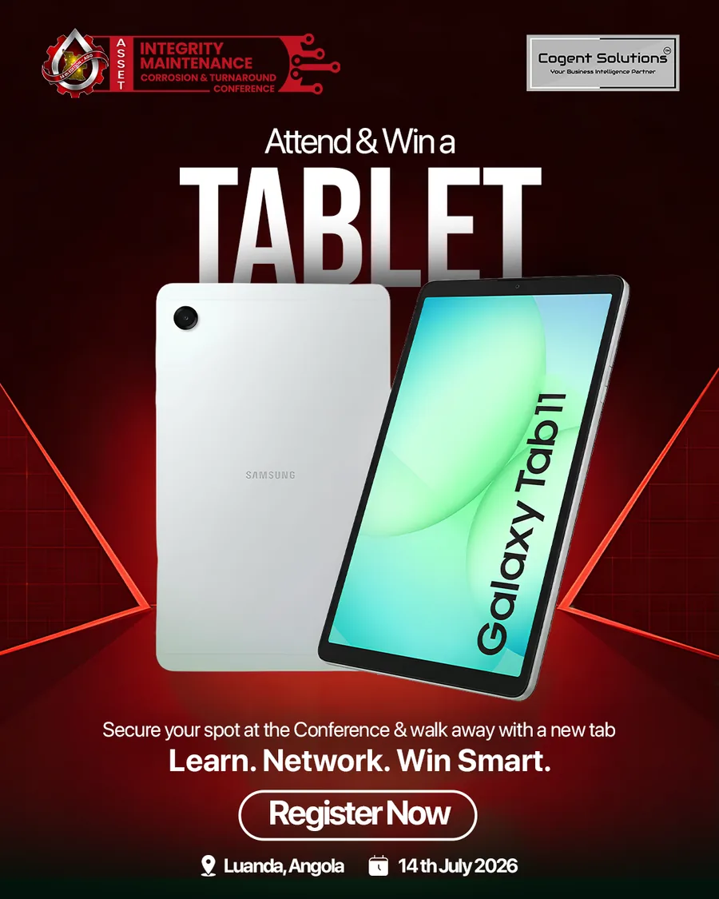
AIMCT ANGOLA 2026 AIMCT ANGOLA 2026 AIMCT ANGOLA 2026
Parceiros de Apoio
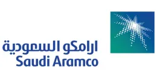
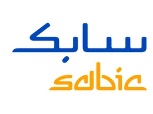
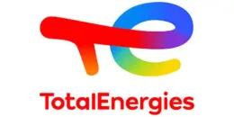
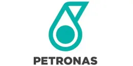
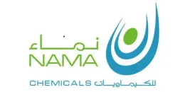
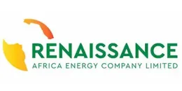
Legado Global AIMCT
Uma presenca comprovada em grandes mercados de energia, agora expandida para Angola.
Destaques da Conferencia
Visao Geral do Evento
A AIMCT 2026, Conferencia de Integridade de Ativos, Manutencao, Corrosao e Turnaround, e a evolucao principal da reconhecida Serie AIM, realizada com sucesso no Qatar, Arabia Saudita, Oma e Nigeria, e agora em expansao para Angola.
Realizada em Luanda apos a procura de operadores e lideres de engenharia em toda a Africa Ocidental, a AIMCT Angola e uma plataforma tecnica de alto nivel para engenheiros, proprietarios de ativos, lideres de turnaround e reguladores.
Esta conferencia apenas por convite oferece um dia completo de aprendizagem tecnica, debate estrategico e colaboracao de engenharia.
De plataformas offshore e oleodutos submarinos a FPSOs e instalacoes de GNL, este e o lugar onde as decisoes de engenharia sao debatidas e os desafios operacionais sao resolvidos.
Painel de Oradores
Perfil do Orador
Cargo
Company
A biografia do orador aparece aqui.
Oradores da Serie

Dr Hanan Farhat
Technical Manager | Asset Life Optimization Wood PLC
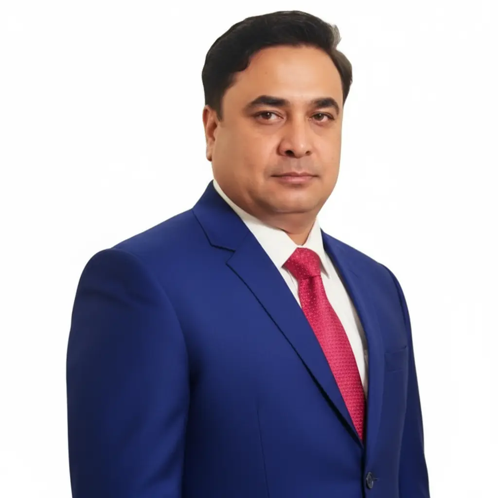
Dr. Liaqat Amin Satti
Global Expert - Risk Management & Organizational Resilience
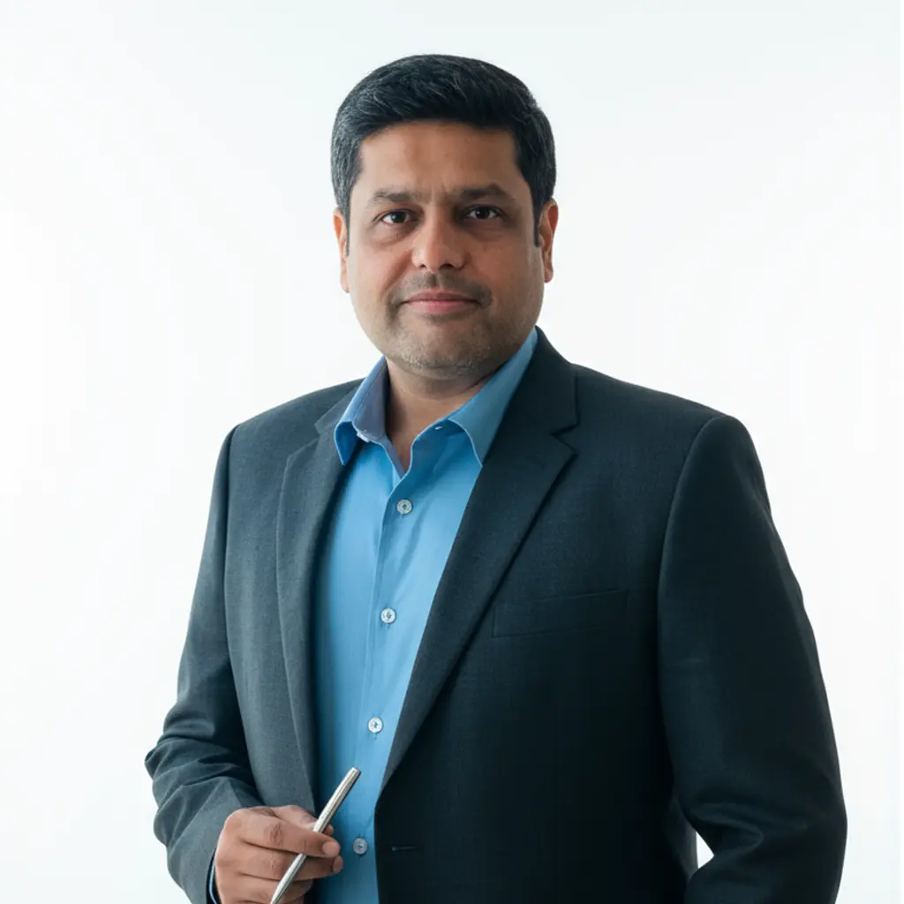
Dr.ir. Zeeshan F. Lodhi
Senior Manager - Integridade de Ativos | Dolphin Energy
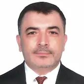
Eng. Ibrahim Hachicha
Operation Leader, Middle East | Baker Hughes - PPS
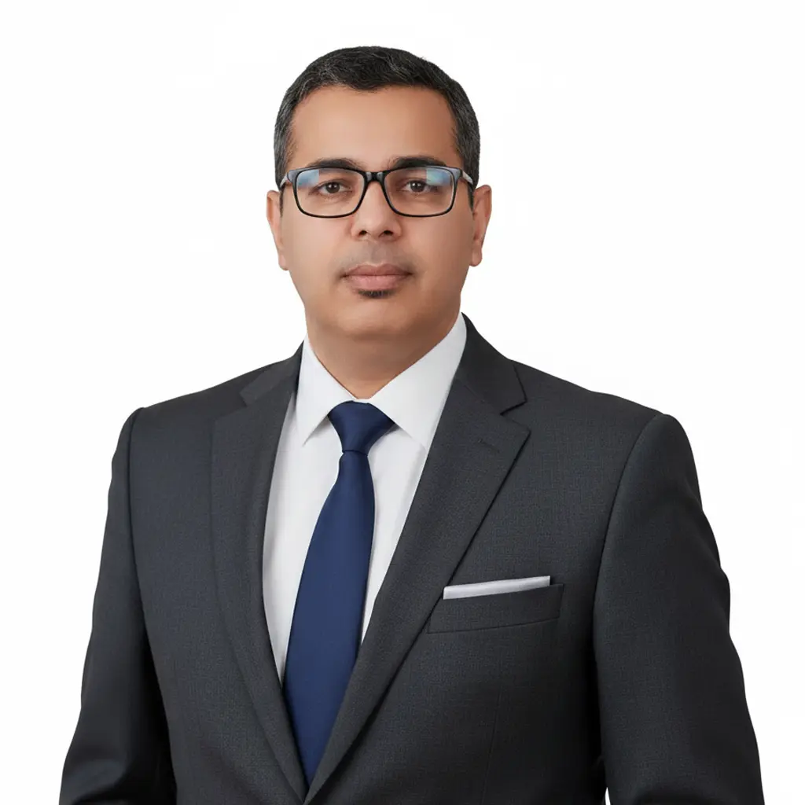
Mr Adel Elhasaeri
Head of Integrity | QAPCO
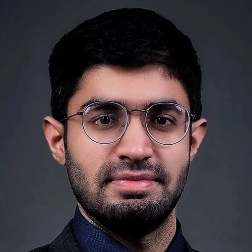
Mr. Hamza Alam
Operations Lead Middle East | Abyss Solutions
Patrocinadores e Parceiros
Patrocinadores da Serie
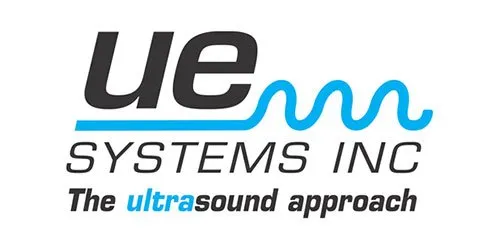
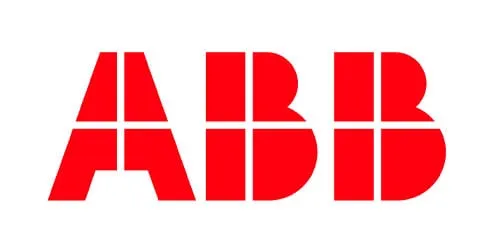
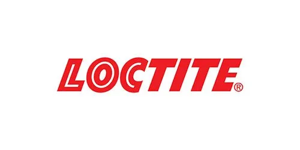
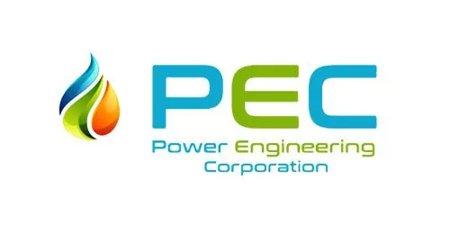
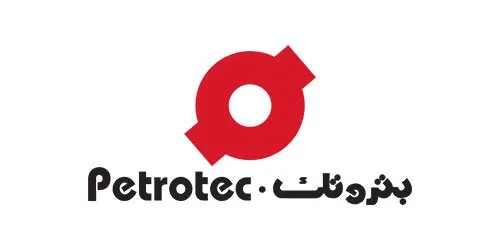
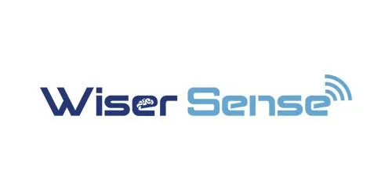
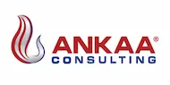
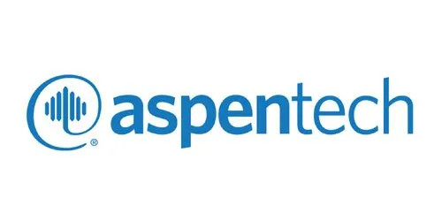
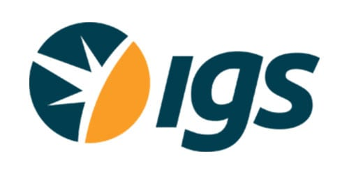
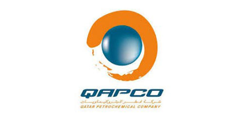
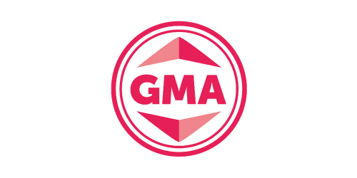
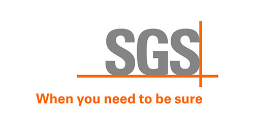
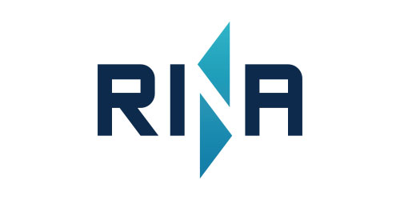
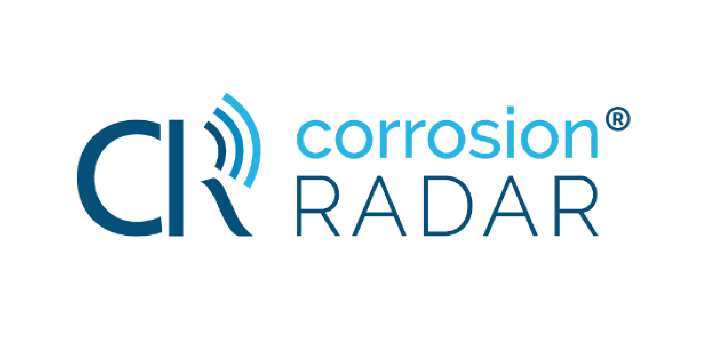
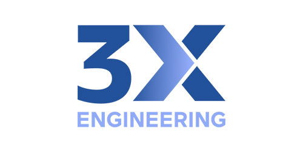
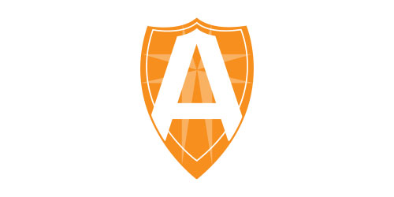
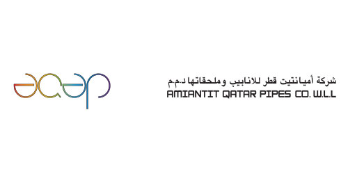
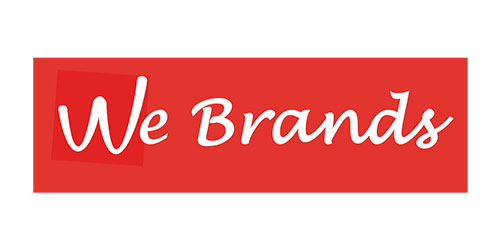
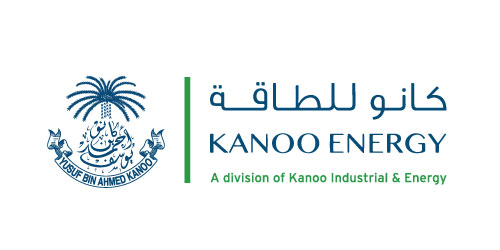
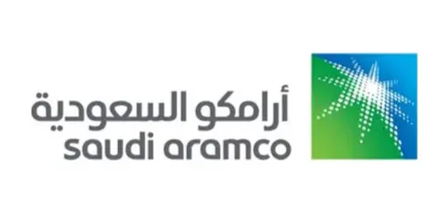
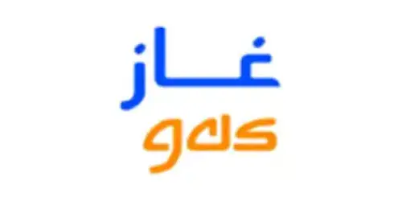
Evento em Numeros
As metricas que definem a escala e o poder de decisao da AIMCT Angola 2026.
300+
Participantes
30+
Oradores
30+
Expositores
4+
Regioes
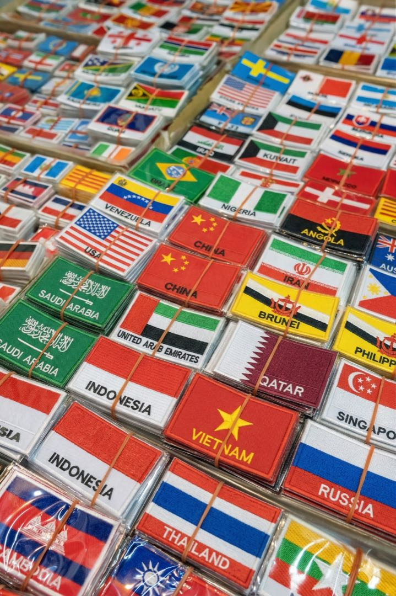
12+
Sessoes
Realidade da Industria
A infraestrutura energetica de Angola esta a entrar numa fase critica. Muitos ativos offshore do pais aproximam-se ou ja ultrapassaram a sua vida util de projeto, criando uma nova geracao de desafios de engenharia que exigem estrategias avancadas de integridade e disciplina operacional.
01.
Major offshore fields and FPSO assets are operating 20-30+ years beyond their original design life.
02.
Saltwater exposure is accelerating corrosion across offshore infrastructure.
03.
Subsea inspection is becoming increasingly complex as deepwater assets age.
04.
FPSO hull fatigue and topside degradation are emerging as critical structural concerns.
05.
Aging deepwater equipment now requires long-term life-extension strategies.
06.
Regulatory pressure around operational safety and reliability is increasing.
Desafios Estrategicos
Por que estes 5 importam
Em conjunto, estes desafios definem o panorama atual de integridade de Angola em:
Eles refletem realidades de upstream, midstream e downstream, nao teoria. E e exatamente isto que a AIMCT Angola 2026 foi criada para resolver.
Upstream - Midstream - Downstream
Quem Estara na Sala
Angolan and global operators
Regional and national regulators
Asset owners, FPSO operators, and deepwater engineering leadership teams
Regional and global technical solution providers
Topicos Principais Abordados
Ativos Deepwater Infrastructure & Life-Extension Engineering
Corrosao Offshore em Ambientes Marinhos
Subsea Inspection & Monitoring Desafios
Integridade Estrutural de FPSO e Gestao de Fadiga
Gestao de Risco de Shutdown e Turnaround
Integridade Preditiva, Gemeos Digitais e Analise com IA
Sistemas de Monitorizacao de Corrosao em Tempo Real
Competencia de Contratados e Capacidade da Forca de Trabalho
Deteccao de Fugas em Oleodutos e Monitorizacao de Integridade
Governanca de Integridade, Seguranca e Conformidade de Fiabilidade
Quem Deve Participar
01
Integrity Leadership
02
Reliability Governance
03
Materials Engineering
04
Turnaround Execution
05
Inspection Estrategia
06
Technical Operations
07
Pipeline Assurance
08
Offshore Operations
09
Compliance Control
10
Digital Integration
11
Plant Performance
12
EPC Decision-Making
Feedback Estrategico

Diretor Geral - Prezicon Limited (Altrad Group)
"Last week, I was pleased to participate as a speaker in the Integridade de Ativos & Gestao de Corrosao Conference held in Lagos and organised by Cogent Solutions, where I presented Prezicon as an Asset Integrity Management Specialist. As part of the Altrad Group, we deliver Integrated Multi- Discipline Services—ranging from engineering support and mechanical services to core fabric maintenance (including Corrosion Under Insulation management), inspection services, and crane maintenance & management. Our clients benefit from robust Integrity Corrective Action capabilities and highly skilled multitasking teams. We also leverage advanced technology, drones and robotics for online operations such as desanding, surface preparation, and painting. A big thank you to all colleagues across the group who contributed to the presentation. Thanks to Cogent Solutions who organised such technical forum."
Deputy Vice President, Engineering Projects - Heirs Energies
"At the Integridade de Ativos & Gestao de Corrosao Conference, our Deputy Vice President, Engineering Projects, Engr. Michael Uche Nwabuoku, addressed a critical question: can Nigeria's mature assets be sustained? Using OML 17 as an example, he highlighted that these assets were built on solid foundations. The focus now is lifecycle integrity, embedding corrosion management, strengthening brownfield governance, and ensuring strong leadership. He emphasised that integrity and safety should not be the responsibility of a single department; they must be owned across the value chain, a core principle of Integridade de Ativos. He further iterates that at Heirs Energies, we embrace the 'everyone is a safety officer' approach, tackling safety and asset integrity challenges proactively and encouraged all independents to adopt this."
Asset IC&E Engineer - Seplat Energy Plc
"It was a great privilege to participate in the Integridade de Ativos Management (AIM) Nigeria Conference held on 25th February, where I had the opportunity to present on the topic: 'Leveraging IC&E Systems for Proactive Integridade de Ativos Management in Aging Onshore and Offshore Facilities.' During the session, I shared insights on how Instrumentation, Control & Electrical (IC&E) systems can play a pivotal role in strengthening asset integrity strategies, enabling operators to move from reactive maintenance to proactive and predictive asset management, especially within aging energy infrastructures. I was also honored to participate in the Fireside Chat Panel Discussion on 'Staying on the Right Side of Regulation.' The discussion highlighted the importance of regulatory compliance, operational discipline, and technology-driven monitoring systems in ensuring sustainable and safe operations across the energy sector. My sincere appreciation goes to the organizers of the AIM Nigeria Conference for creating such an impactful platform that brings together industry experts, regulators, and technology leaders to share knowledge and strengthen asset integrity practices across the region."
Pipeline Engineering | Pipeline Integrity Management
"Just attended Integridade de Ativos and Gestao de Corrosao Conference and it was a blast! Had the honor of speaking alongside industry leaders, sharing insights on Pipeline Integrity in Hostile Terrains - The Niger Delta Case. Also learned from other industry leaders, explored cutting-edge tech, and connected with peers. Looking forward to implementing new strategies. Thanks Cogent Solutions for putting together an insightful event!"
Transformacao Digital | Asset integrity | Corrosion Monitoring - Emerson
"A rewarding and insightful day at AIM Nigeria 2026, connecting with customers, industry leaders and peers to exchange ideas and explore the future of asset integrity management. Thank you to everyone who joined our discussions and engaged with the Emerson team during the event. It was a pleasure showcasing how Emerson is transforming asset integrity through Digitalized, Non-intrusive Corrosion & Erosion Monitoring and empowering organizations to: Enable predictive maintenance strategies Conduct remote inspections with greater efficiency Improve operational reliability and safety Contribute to more sustainable and resilient operations Your interest, questions, and perspectives made the conversations truly valuable."
Asset Management Professional
"I am pleased to formally state my participation in the just concluded Integridade de Ativos and Corrosion Management (AIM) Conference held on 25th February 2026 at the Oriental Hotel Lagos. The conference, organized by Cogent Solutions, brought together industry leaders, technical experts, and asset management professionals to discuss contemporary challenges and innovative solutions in asset integrity and corrosion management. I had the privilege of serving as a panelist and as a speaker on the topic, 'Transformacao Digital for Enhanced Integridade de Ativos.' During my presentation, I highlighted the strategic integration of digital technologies—such as predictive analytics, real-time monitoring systems, data-driven maintenance frameworks, and intelligent asset management platforms—to strengthen asset reliability, optimize lifecycle performance, and improve operational efficiency within the oil and gas sector and related industries."
Energy Professional | Integridade de Ativos Engineer at Shell
"It was a privilege to share insights with industry leaders on 'Staying on the Right Side of Regulation' at the recently concluded Integridade de Ativos & Gestao de Corrosao Conference. Building a culture of proactive regulatory alignment remains fundamental to achieving excellence in integrity management. My appreciation goes to my very own boss Samuel Ojo, the team Tomi Oyetunde, Egwolo Okore, Zeenia Allabdeen and Cogent Solutions Event Management for the honor and the opportunity to speak on Revolutionising Pipeline Integrity, with a focus on in-situ material verification using non-destructive technologies—a truly innovative approach to mechanical testing. Grateful as well for the chance to learn from fellow asset integrity professionals and industry experts on emerging strategies and technologies shaping the future of our field."

Senior Project and Process Technology Engineer at S-Chem
"Honored to speak at AIM 2025 - Integridade de Ativos & Gestao de Corrosao Conference, where I presented: 'From Design to Daily Operations: Embedding Corrosion Awareness Across the Organization.' The session explored how corrosion prevention must be a shared responsibility—embedded across engineering, operations, procurement, maintenance, inspection, and executive leadership. I emphasized the importance of cross-functional collaboration, timely data, and strategic accountability to mitigate corrosion risks and protect industrial assets. Key themes included: Operational deviations and their impact on corrosion mechanisms; Procurement and construction misalignments in material selection; Laboratory and inspection practices that shape corrosion decisions; Executive management's role in budget alignment, training, and culture-building. It was a privilege to engage with professionals committed to elevating integrity, safety, and sustainability across the industry... Thank you to Cogent Solutions for the outstanding organization and to all participants for the insightful dialogue".

Team Manager at KRABO®
"Through a report by Paolo Redaelli, Team Manager, KRABO® participated in the Integridade de Ativos & Gestao de Corrosao Conference & Exhibition at the beginning of October in Yanbu, Saudi Arabia. The event refers to large companies in the petrochemical sector who want to share best practices and innovations related to the durability, monitoring, and maintenance of critical structures/constructions and strategic assets. The Networking Bolts, presented by KRABO®, and their application from a Structural Health Monitoring perspective generated significant interest among an audience comprising decision-makers at the facility level of the leading Arab petrochemical companies".

Business Excellence GM at SANKYU | Business Development
"Glad for SANKYU to have participated as an Industry Partner in this successful event".

Strategic Senior Research & Innovation Director
"It was a pleasure to give a talk in the conference. Thank you for organizing the event Zeenia".

Engineering Consultant - Non Metallics and Corrosion
"It was a pleasure to participate in the Conference as part of the technical committee, emgage in technical discussions and share experiences".
Registo
Junte-se a operadores, reguladores e lideres de engenharia num dia apenas por convite focado em integridade deepwater, corrosao, manutencao e decisoes de turnaround.